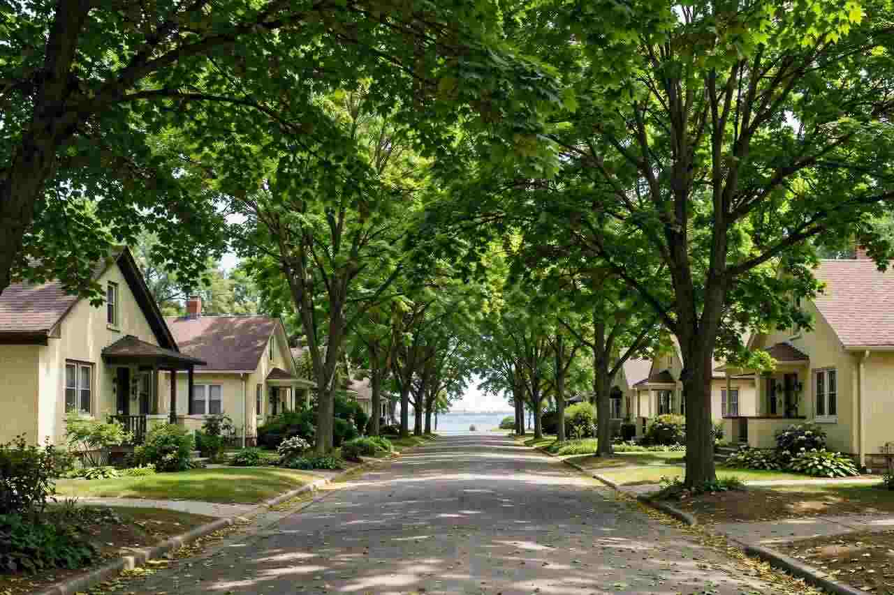

Rodent Control · Dale, WI
Licensed Rodent Control in Dale, WI
Hearing scratching at night or finding droppings in Dale? Murvo is a rodent-only specialist offering same-day service from local crews. We identify the species, remove the infestation, clean up the mess, and exclude rodents for good. Pricing is flat-rate and quoted in writing, the work is guaranteed in writing, and coverage extends across Outagamie County for homes and businesses alike. Service covers 2 ZIP codes across Outagamie County, including 54931, 54944, with same-day appointments where schedules allow.
24/7Availability
2ZIP codes covered
Same-dayResponse
Licensed · Upfront options · Written guarantees · Fully insured
Dale at a glance
Local Rodent Control for Dale, WI.
Outagamie County
Countyeastern Wisconsin
RegionAppleton · 14 mi
Nearest metro91 mile northeast of Madison
From Madison2
ZIP codes covered Service by service in Dale
Rodent Control Services Available in Dale
Rodent-only specialists serving Dale and Outagamie County. Every service below is explained in local terms - the species involved, the entry points that matter in vintage duplexes and stone homes, brick bungalows, older single-family homes, and farm and rural properties, and the seasonal timing that decides whether a fix lasts.
- 01Rodent Control↗
- 02Rodent Inspection↗
- 03Rodent Removal↗
- 04Rodent Exclusion↗
- 05Rodent Proofing↗
- 06Rat Control↗
- 07Mice Control↗
- 08Mouse Removal↗
- 09Rat Removal↗
- 10Rodent Trapping↗
- 11Rodent Baiting↗
- 12Rodenticide Application↗
- 13Attic Rodent Removal↗
- 14Crawl Space Rodent Removal↗
- 15Wall Rodent Removal↗
- 16Kitchen Rodent Control↗
- 17Garage Rodent Control↗
- 18Commercial Rodent Control↗
- 19Residential Rodent Control↗
- 20Emergency Rodent Removal↗
- 21Same-Day Rodent Control↗
- 22Rodent Damage Repair↗
- 23Rodent Waste Cleanup↗
- 24Rodent Disinfection↗
- 25Rodent Odor Removal↗
- 26Dead Rodent Removal↗
- 27Rodent Dropping Cleanup↗
- 28Rodent Exclusion for Roofs↗
- 29Rodent Exclusion for Vents↗
- 30Rodent Exclusion for Chimneys↗
Rodent Control in Dale
Rodent Control in Dale
In Dale, vintage duplexes and stone homes, brick bungalows, older single-family homes, and farm and rural properties give rodents warmth, shelter, and easy routes through basement foundations, alley-facing garage doors, sewer laterals, and gaps around utility lines and sills, especially once nights turn cold across Outagamie County. Our licensed, insured technicians identify the species, map active runways, and build a control plan around your home rather than a generic spray. Every visit is documented with photos, trap records, and clear next steps for your household.
In Dale, rodent control is not a generic spray-and-go service. Rodents exploit basement foundations, alley-facing garage doors, sewer laterals, and gaps around utility lines and sills in vintage duplexes and stone homes, brick bungalows, older single-family homes, and farm and rural properties, and a fix that ignores those routes does not last. Murvo's Dale team inspects first, shows you the evidence - droppings, gnaw marks, entry gaps - and then lays out the work with a flat-rate written quote. We serve all of Outagamie County from Dale, including Hortonville, Winchester, and every job is covered by our written workmanship guarantee. Coverage for rodent control spans 2 ZIP codes in Outagamie County, including 54931, 54944.
Consider how a visit unfolds. Inside, attic and crawl-space evidence shapes the trapping plan, which is adjusted visit by visit as numbers change. Cleanup guidance covers contaminated areas safely, and exclusion work closes the route permanently. Throughout, photographs and written notes keep you informed, so progress is something you can see and verify rather than something you are asked to trust. The technician walks the exterior before touching anything indoors, noting gaps, rub marks, and food sources. Photographs taken at the start make those later comparisons honest, because memory alone tends to blur the details.
After you book, we confirm a time window and your background-checked technician arrives in a marked vehicle with identification. They walk the property with you, inspect inside and out, and explain what they find with photos. You receive a flat-rate written quote before any work starts. Once approved, trapping and sealing begin, and follow-up visits are scheduled before we leave, with the guarantee in writing. No work begins without your approval.
In most of Dale, we can offer a same-day appointment for rodent control, and our lines are open 24/7 for urgent cases like scratching in the walls or a rodent in a living area. Your technician inspects first, explains the plan, and quotes a flat rate in writing before any work begins, so help starts fast without surprises. If you are seeing signs now, an inspection this week is the fastest way to know which situation you are in.
The honest answer is that it depends on species, activity level, and how much sealing your home needs, which is why Murvo inspects first and then gives you a flat-rate quote in writing. For national context only, Angi's 2026 data averages rat and mouse removal and control at $396, typically $189 to $655; that is not a Murvo price, and your written quote is the figure you pay.
Rodent Inspection in Dale
Rodent Inspection in Dale
A proper rodent inspection in Dale answers three questions: which species is active, where is it nesting, and how is it getting inside? Our licensed, insured technicians document runways, droppings, and damage with photos and plain-language notes, then separate urgent fixes from preventive ones. There is no pressure to proceed, and every recommendation is priced in writing first.
Homeowners in Dale call Murvo for rodent inspection because the problem here is specific: Norway rat (Rattus norvegicus) pressure around vintage duplexes and stone homes, brick bungalows, older single-family homes, and farm and rural properties, tight access at basement foundations, alley-facing garage doors, sewer laterals, and gaps around utility lines and sills, and activity that follows the local season. Our Outagamie County crews diagnose the real source before recommending work, explain the options in plain language, and quote one flat rate in writing. Across Dale - including Hortonville, Winchester - every visit is backed by licensed, insured technicians and our written workmanship guarantee. Coverage for rodent inspection spans 2 ZIP codes in Outagamie County, including 54931, 54944.
Think of the inspection as three passes. The review pass brings it together: species, likely numbers, contamination, and the order in which fixes should happen. Each pass is photographed, and nothing is recommended without evidence from one of those passes to support it. The exterior pass checks siding, vents, pipe entries, and roof junctions for gaps and rub marks. The interior pass covers attic insulation, crawl-space corners, and kitchen voids for droppings, nests, and gnawing. The report separates what rodents are doing now from what the structure merely allows them to do later.
To book, call any time; urgent inspections are answered 24/7. On the day, your technician works through the property methodically, reviews photographs with you on site, and leaves written findings plus any quote before departing. We agree a window, note where you have noticed signs, and confirm access to the attic and crawl space. You keep the report either way, and it remains useful for staging repairs later or comparing conditions at a future seasonal check.
You do not have to wait days for answers in Dale. Same-day rodent inspection appointments are available in most areas, urgent calls are taken 24/7, and most home inspections take under an hour. You finish the visit with photos, written findings, and flat-rate pricing for anything we recommend. In Outagamie County, activity follows the local season, so timing the work matters as much as the method.
Nationally, a professional rodent inspection typically runs $100 to $200 according to Angi's 2026 data, and it is often credited toward the job if you proceed. Murvo confirms your exact rodent inspection price before the visit and quotes any follow-up work as a flat rate in writing after inspection, so the figure you approve is the figure you pay, with no hourly billing.
Rodent Removal in Dale
Rodent Removal in Dale
Finding droppings in the kitchen or hearing scratching overhead in Dale means rodents are already living indoors, and they will not leave on their own. Murvo's rodent removal clears active Norway rat (Rattus norvegicus) and House mouse (Mus musculus) with targeted trapping, removes animals hygienically, and closes the entry points behind them. One flat-rate written quote covers the program before work begins.
In Dale, rodent removal is not a generic spray-and-go service. Rodents exploit basement foundations, alley-facing garage doors, sewer laterals, and gaps around utility lines and sills in vintage duplexes and stone homes, brick bungalows, older single-family homes, and farm and rural properties, and a fix that ignores those routes does not last. Murvo's Dale team inspects first, shows you the evidence - droppings, gnaw marks, entry gaps - and then lays out the work with a flat-rate written quote. We serve all of Outagamie County from Dale, including Hortonville, Winchester, and every job is covered by our written workmanship guarantee. Around Winchester, Greenville, New London, the pattern is similar: House mouse (Mus musculus) finds basement foundations, alley-facing garage doors, sewer laterals, and gaps around utility lines and sills first, and lasting rodent removal has to close those routes.
Removal starts with an assessment of species, numbers, and access routes across attics, wall voids, garages, and kitchens. Removal is followed immediately by entry-point exclusion, because new rodents will replace removed ones through any gap left open, and disinfection is arranged after heavy activity. Once you approve the written quote, technicians set traps along proven runways, check them on schedule, and remove animals promptly and hygienically. Catch records show progress clearly instead of relying on guesswork. Photos document each stage for you.
Once you book rodent removal in Dale, we agree a time window and your technician arrives with traps, protective equipment, and a clear plan. The first visit confirms activity and sets traps; return visits clear and reset them on schedule. When catches reach zero, we walk through the results, discuss sealing, and confirm your written guarantee before closing the job. Progress is photographed and shared with you throughout the program. Nothing is left unexplained.
For active infestations in Dale, rodent removal can usually start the same day you call, and our team answers 24/7 when a rodent is loose in a living area. The first visit confirms activity and sets traps straight away; return visits then clear and reset them until monitoring shows the property is completely clear. If you are seeing signs now, an inspection this week is the fastest way to know which situation you are in.
How many animals are active, which species they are, and how much sealing follows removal all shape the price, so we assess first and then quote one flat rate in writing. Angi's 2026 national context — an average of $396 and a typical $189 to $655 range for rat and mouse removal — is provided for comparison only; your written quote is the exact Murvo figure.
Rodent Exclusion in Dale
Rodent Exclusion in Dale
Exclusion is also the safest long-term strategy for Dale homes, because a sealed house needs far less bait and fewer repeat treatments. Murvo's licensed, insured crews finish roof, vent, and chimney work to weatherproof standards, walk every sealed opening with you afterwards, and back the result with a written workmanship guarantee you can hold us to.
When you need rodent exclusion in Dale, the job starts with what is actually happening in your part of Outagamie County. Murvo crews work Dale every week, so they know how Norway rat (Rattus norvegicus) and House mouse (Mus musculus) behave around vintage duplexes and stone homes, brick bungalows, older single-family homes, and farm and rural properties here - and where they get in: basement foundations, alley-facing garage doors, sewer laterals, and gaps around utility lines and sills. We arrive equipped for the full job, confirm the flat rate in writing before work begins, and cover the whole Dale area, including Hortonville, Winchester. No call-center runaround and no open-ended hourly billing - just a local crew, a clear plan, and a written quote you approve first. The Dale crews who handle rodent exclusion also handle the follow-through - proofing, cleanup, and monitoring - so one visit can close the whole problem.
Before any sealing, active rodents are cleared with trapping so nothing is trapped inside the structure. A final walkthrough shows you every protected opening, and monitoring checks confirm no new activity appears at sealed points. We then work opening by opening around basement foundations, alley-facing garage doors, sewer laterals, and gaps around utility lines and sills, rooflines, and utility penetrations, photographing each finished seal. Because exclusion removes the route in rather than relying on chemicals, it reduces the need for rodenticides and supports pet-safe, no-poison control. Every seal is listed on your written guarantee.
After booking rodent exclusion in Dale, your technician first surveys the whole exterior and confirms which openings are active. Follow-up monitoring is arranged, and every seal is covered by the written workmanship guarantee. You receive a flat-rate written quote listing each seal before work starts. Sealing is then completed opening by opening, photographed as we go, and finished with a walkthrough together. No opening is sealed without being shown to you first.
Rodent exclusion in Dale usually starts with a survey visit we can often schedule the same day you call. Sealing itself is booked as soon as any active animals are cleared, because nothing is sealed inside. Most homes are fully sealed within days, not weeks, and urgent entry points near wiring or food areas are prioritized first. The written quote for your Dale property will spell out exactly which of these applies before any work starts.
After the survey of your Dale home, every opening that needs sealing is listed and priced as one flat-rate written quote, so you pay only for the work your property needs. For national context, Angi's 2026 data puts basic exclusion at $200 to $600 depending on access and the number of openings; that benchmark is not a Murvo price.
Rodent Proofing in Dale
Rodent Proofing in Dale
When is the right season for rodent proofing in Dale? Before cold weather sends rodents searching for indoor warmth, though any quiet month works well. Our licensed, insured technicians harden the structure, advise on food storage and vegetation, and leave a seasonal re-check booked, all backed by a written workmanship guarantee.
When you need rodent proofing in Dale, the job starts with what is actually happening in your part of Outagamie County. Murvo crews work Dale every week, so they know how Norway rat (Rattus norvegicus) and House mouse (Mus musculus) behave around vintage duplexes and stone homes, brick bungalows, older single-family homes, and farm and rural properties here - and where they get in: basement foundations, alley-facing garage doors, sewer laterals, and gaps around utility lines and sills. We arrive equipped for the full job, confirm the flat rate in writing before work begins, and cover the whole Dale area, including Hortonville, Winchester. No call-center runaround and no open-ended hourly billing - just a local crew, a clear plan, and a written quote you approve first. Around Winchester, Greenville, New London, the pattern is similar: House mouse (Mus musculus) finds basement foundations, alley-facing garage doors, sewer laterals, and gaps around utility lines and sills first, and lasting rodent proofing has to close those routes.
Materials follow the same standard as full exclusion work: copper mesh packed into irregular gaps, hardware cloth over openings that need airflow, flashing at vulnerable junctions, and sealants matched to smaller cracks. The written plan photographs each weakness, states who handles it, and schedules a seasonal re-check, since new gaps appear as a building ages and proofing works best as maintenance. Around kitchens, pipe runs and the voids behind units receive particular attention, because warmth and food meet there. Seasonal timing is noted in the plan as well.
Arrange a survey at a time that suits you; there is no emergency, so scheduling stays relaxed. Your technician walks every side of the property with you, photographs weak points, and talks through the plan in plain language. You then receive a written quote separating essential work from optional improvements, and nothing proceeds without your say-so. Staging the work is fine; essential sealing can proceed first while optional improvements wait until a season or budget that suits you better.
Proofing is planned work rather than an emergency, but you can still move fast: rodent proofing surveys in Dale are often available the same day and always within a few days. Once you approve the plan, most work is finished in a single visit, ideally before colder weather drives rodents indoors. Around Dale, vintage duplexes and stone homes, brick bungalows, older single-family homes, and farm and rural properties give rodents the most cover, which is why entry points get checked before traps are set.
We survey your Dale property first, separate the quick wins you can handle yourself from the specialist sealing, and quote the professional work as one flat rate in writing so spending can be staged. Angi's 2026 national context puts exclusion, the core of proofing, at $200 to $600 for basic work — a benchmark only, not a Murvo price.
Rat Control in Dale
Rat Control in Dale
What separates control from a temporary lull? Monitoring that continues after the last catch. Murvo keeps checking until routes stay quiet, removes trapped rats hygienically, and finishes with exclusion so replacements cannot follow the same path. Licensed, insured technicians document every visit, and urgent calls are answered 24/7.
When you need rat control in Dale, the job starts with what is actually happening in your part of Outagamie County. Murvo crews work Dale every week, so they know how Norway rat (Rattus norvegicus) and House mouse (Mus musculus) behave around vintage duplexes and stone homes, brick bungalows, older single-family homes, and farm and rural properties here - and where they get in: basement foundations, alley-facing garage doors, sewer laterals, and gaps around utility lines and sills. We arrive equipped for the full job, confirm the flat rate in writing before work begins, and cover the whole Dale area, including Hortonville, Winchester. No call-center runaround and no open-ended hourly billing - just a local crew, a clear plan, and a written quote you approve first. The Dale crews who handle rat control also handle the follow-through - proofing, cleanup, and monitoring - so one visit can close the whole problem.
Wary rats punish rushed trapping, so the program begins with patience. Only then are traps set, checked frequently, and repositioned as the pattern shifts. Catches are recorded by location, giving a clear picture of colony size and movement. Exclusion follows at rooflines and entry points, and monitoring devices remain in place afterwards to verify that quiet routes have genuinely stayed quiet. Unset traps are placed on confirmed runways and pre-baited until feeding becomes confident and regular. Counts matter here, because a falling catch trend tells a different story from a single lucky night.
Call and describe where signs are strongest; that directs the first inspection. Approval starts the program the same visit, with follow-up checks booked ahead so momentum never depends on you calling back. Your technician maps routes and harborage, explains the pre-baiting plan honestly, including why results build over days, and provides the written quote. You will know after each visit what was caught, where placements changed, and what the next check is specifically looking for.
Rats do not wait, and neither do we: rat control in Dale can usually start with a same-day inspection, and urgent calls are answered 24/7. Pre-baiting begins on the first visit once you approve the written quote, traps are set as soon as rats are feeding confidently, and scheduled checks keep the program moving until activity stops. That is also why Murvo pairs removal with exclusion in Dale - treating the animal without closing basement foundations, alley-facing garage doors, sewer laterals, and gaps around utility lines and sills rarely lasts.
Species, colony size, and the number of entry points to seal all affect rat work, which is why Murvo inspects first and quotes one flat rate in writing. Angi's 2026 figures, given for national context only, average rat control and removal at $396 and typically run $189 to $655; the written quote for your Dale home is the exact price.
Mice Control in Dale
Mice Control in Dale
In vintage duplexes and stone homes, brick bungalows, older single-family homes, and farm and rural properties, mice think small, and control has to think smaller. A gap at basement foundations, alley-facing garage doors, sewer laterals, and gaps around utility lines and sills no wider than a pencil is an open door, and pipe runs become private highways across Outagamie County homes. Our technicians hunt those overlooked routes for House mouse (Mus musculus) activity, then combine trapping, sealing, and food-storage advice.
When you need mice control in Dale, the job starts with what is actually happening in your part of Outagamie County. Murvo crews work Dale every week, so they know how Norway rat (Rattus norvegicus) and House mouse (Mus musculus) behave around vintage duplexes and stone homes, brick bungalows, older single-family homes, and farm and rural properties here - and where they get in: basement foundations, alley-facing garage doors, sewer laterals, and gaps around utility lines and sills. We arrive equipped for the full job, confirm the flat rate in writing before work begins, and cover the whole Dale area, including Hortonville, Winchester. No call-center runaround and no open-ended hourly billing - just a local crew, a clear plan, and a written quote you approve first. Around Winchester, Greenville, New London, the pattern is similar: House mouse (Mus musculus) finds basement foundations, alley-facing garage doors, sewer laterals, and gaps around utility lines and sills first, and lasting mice control has to close those routes.
Hygiene is part of control, not an afterthought. Technicians also review how food, pet supplies, and bird seed are stored, since an open supply restarts activity quickly. The program favors traps over bait throughout, which keeps family kitchens safer and makes every result countable and visible. Droppings in cabinets are never dry-swept; surfaces are disinfected first, following careful practice, so contamination is not pushed into the air, and nesting debris is bagged and removed. Follow-up monitoring then verifies the kitchen, attic, and voids together, rather than treating each room in isolation.
After booking, we confirm your time window and any rooms where you have seen droppings or heard scratching. Return visits clear and reset traps, then sealing is completed and the written guarantee confirmed at the final check. You approve the plan and price before trapping starts. On arrival, your background-checked technician inspects, sets clustered traps at proven hotspots, and talks you through pet and child safety around placements. No surprises are added later.
Mice multiply fast, so mice control in Dale is built to start fast too: a survey can often be arranged the same day you call, with traps set on that first visit once the quote is approved. Because mice investigate new objects quickly, catches usually begin soon after, and check visits follow until a final confirmation shows activity has stopped. In Outagamie County, most cases involve the Norway rat (Rattus norvegicus) and the House mouse (Mus musculus), so the inspection focuses on their routes first.
The number of rooms affected and the amount of sealing required set the price, so Murvo surveys first and quotes one flat rate in writing. For national context only, Angi's 2026 data averages rat and mouse control and removal at $396, typically $189 to $655 — not a Murvo price; your written quote is exact.
Mouse Removal in Dale
Mouse Removal in Dale
Removal is only half the job in Outagamie County homes, because new mice follow the same scent trails and gaps within days. Murvo pairs trapping with droppings and nesting cleanup, safe disinfection, and proper exclusion sealing, all delivered by licensed, insured, background-checked technicians. For repeated problems, seasonal proofing checks sweeps and seals before the fall rush of mice seeking warmth.
When you need mouse removal in Dale, the job starts with what is actually happening in your part of Outagamie County. Murvo crews work Dale every week, so they know how Norway rat (Rattus norvegicus) and House mouse (Mus musculus) behave around vintage duplexes and stone homes, brick bungalows, older single-family homes, and farm and rural properties here - and where they get in: basement foundations, alley-facing garage doors, sewer laterals, and gaps around utility lines and sills. We arrive equipped for the full job, confirm the flat rate in writing before work begins, and cover the whole Dale area, including Hortonville, Winchester. No call-center runaround and no open-ended hourly billing - just a local crew, a clear plan, and a written quote you approve first. Seasonal timing matters for mouse removal in Dale: rodents surge in Dale from October through April.
The survey comes first, and it is deliberately thorough. Traps are then set in multiples at proven points, because a single trap rarely reflects colony size. Returns are scheduled tightly: catches are cleared, traps reset, and numbers tracked until they fall to zero and stay there across a confirming check before sealing begins. Lofts, under-floor voids, cabinets, and the spaces behind kitchen units are checked for nests, droppings, and stored food caches. Photographs of nesting sites help here, because they reveal how far activity had spread before trapping began.
For urgent mouse problems in Dale, contact Murvo for a same-day response where available. Your technician surveys the home, explains the multi-trap plan, and confirms a flat-rate written quote before starting. Return visits are scheduled to clear and reset traps, and cleanup and sealing follow once catches reach zero. The final visit confirms the result and your written workmanship guarantee. You are updated after every visit, without ever chasing us.
In Dale, mouse removal can often begin the same day you call, especially where mice are active in kitchens or living areas. The first visit surveys nesting sites and sets traps immediately after you approve the quote; because mice investigate traps quickly, catches usually start fast, and return visits continue until numbers reach zero. If you are seeing signs now, an inspection this week is the fastest way to know which situation you are in.
Rooms involved and sealing needed determine the cost of removal, so we survey first and agree a flat rate in writing before work begins. As national context only, Angi's 2026 data averages rat and mouse removal at $396, with a typical range of $189 to $655; that benchmark is not a Murvo price, and your written quote covers your exact program.
Rat Removal in Dale
Rat Removal in Dale
A hurried rat removal that misses breeding females or a hidden nest simply restarts the cycle. Murvo's rat removal in Dale starts with a species and colony-size assessment, uses pre-baited traps on confirmed runways, and removes animals hygienically across repeat visits. A flat-rate written quote is agreed before trapping starts.
In Dale, rat removal is not a generic spray-and-go service. Rodents exploit basement foundations, alley-facing garage doors, sewer laterals, and gaps around utility lines and sills in vintage duplexes and stone homes, brick bungalows, older single-family homes, and farm and rural properties, and a fix that ignores those routes does not last. Murvo's Dale team inspects first, shows you the evidence - droppings, gnaw marks, entry gaps - and then lays out the work with a flat-rate written quote. We serve all of Outagamie County from Dale, including Hortonville, Winchester, and every job is covered by our written workmanship guarantee. Seasonal timing matters for rat removal in Dale: rodents surge in Dale from October through April.
Scale determines everything, so assessment precedes action. Attic colonies receive dedicated work overhead, while any carcass in a void is retrieved before odor develops. Technicians establish species, estimate colony size from droppings and runways, and locate harborage before placing a single trap. Pre-baiting unset traps then builds feeding confidence in these naturally cautious animals. Once set, traps are checked frequently, animals are removed hygienically, and placements shift as activity contracts toward its last pockets. Visit notes record weather and access too, since both affect rat movement and help explain any slower nights.
Book and we will agree a visit time, with same-day appointments for active infestations where available. Your technician assesses the colony, explains each stage, and confirms the written quote before pre-baiting begins. Repeat visits are scheduled in advance, progress is reported after each one, and sealing follows once catches stop and monitoring stays clear. Every visit is documented with counts and locations, so the final clearance rests on a complete record rather than a single quiet check.
In Dale, rat removal can usually start the same day you call, with 24/7 answering for rats active in living areas. Pre-baiting begins on the first visit after you approve the written quote, and traps are set once rats feed confidently, typically within days. Repeat visits then run frequently until monitoring confirms the colony is gone. That is also why Murvo pairs removal with exclusion in Dale - treating the animal without closing basement foundations, alley-facing garage doors, sewer laterals, and gaps around utility lines and sills rarely lasts.
Colony size, access, and the sealing needed afterwards drive the price, so Murvo assesses the property first and quotes a flat rate in writing covering the full program. Angi's 2026 data, for national context only, averages rat removal at $396 and typically ranges from $189 to $655; that is a benchmark, not a Murvo price.
Rodent Trapping in Dale
Rodent Trapping in Dale
Why choose trapping over poison in a family home? Every result is visible, countable, and removable, with no chemicals loose indoors and no animals dying in hidden voids. Murvo offers snap, multi-catch, and live-capture options, explains each placement for pet and child safety, and guarantees the finished program in writing.
When you need rodent trapping in Dale, the job starts with what is actually happening in your part of Outagamie County. Murvo crews work Dale every week, so they know how Norway rat (Rattus norvegicus) and House mouse (Mus musculus) behave around vintage duplexes and stone homes, brick bungalows, older single-family homes, and farm and rural properties here - and where they get in: basement foundations, alley-facing garage doors, sewer laterals, and gaps around utility lines and sills. We arrive equipped for the full job, confirm the flat rate in writing before work begins, and cover the whole Dale area, including Hortonville, Winchester. No call-center runaround and no open-ended hourly billing - just a local crew, a clear plan, and a written quote you approve first. Coverage for rodent trapping spans 2 ZIP codes in Outagamie County, including 54931, 54944.
Adjustment is where experience shows. Households receive a simple map of device locations and safety guidance for children and pets. As numbers fall toward zero, attention shifts to exclusion recommendations and cleanup, converting a trapping program into lasting protection. If catches cluster at one end of a runway, placements concentrate there; if a route goes quiet while another warms up, devices move accordingly. Baits are refreshed and matched to what the species is already eating nearby. Households can follow that adjustment process through the shared catch log, which records every change of position.
After booking, we confirm your time window and any pet or child considerations for trap placement. On arrival, your background-checked technician explains each device location and what to expect between visits. Follow-up checks are booked ahead, catches are removed promptly and hygienically, and placements are adjusted as the pattern changes. The program ends with a monitoring check and a clear written summary. You always know what was caught and where.
In Dale, a rodent trapping program can usually start the same day you call, with traps placed or pre-baiting begun on the first visit after you approve the quote. Mice often investigate within the first night, while wary rats need a few days of pre-baiting before traps are set. Scheduled checks then keep the program moving until numbers reach zero. In Outagamie County, most cases involve the Norway rat (Rattus norvegicus) and the House mouse (Mus musculus), so the inspection focuses on their routes first.
Trapping is usually quoted as part of a complete removal program rather than by the trap, and the price depends on species, activity level, and how many check visits are needed. Murvo inspects first and quotes one flat rate in writing covering the program and its check visits, so there are no per-visit surprises and no hourly billing at any stage.
Rodent Baiting in Dale
Rodent Baiting in Dale
What rules govern bait near children, pets, and wildlife in Wisconsin? Strict ones, and Murvo follows them plainly. State rules restrict anticoagulant rodenticides, and Murvo applies the same care everywhere: no loose bait, no open trays, no unmonitored stations. Before placement, you review locations, risks, and alternatives with a licensed technician.
In Dale, rodent baiting is not a generic spray-and-go service. Rodents exploit basement foundations, alley-facing garage doors, sewer laterals, and gaps around utility lines and sills in vintage duplexes and stone homes, brick bungalows, older single-family homes, and farm and rural properties, and a fix that ignores those routes does not last. Murvo's Dale team inspects first, shows you the evidence - droppings, gnaw marks, entry gaps - and then lays out the work with a flat-rate written quote. We serve all of Outagamie County from Dale, including Hortonville, Winchester, and every job is covered by our written workmanship guarantee. In Dale, rodent baiting calls most often involve vintage duplexes and stone homes, brick bungalows, older single-family homes, and farm and rural properties, where basement foundations, alley-facing garage doors, sewer laterals, and gaps around utility lines and sills decide whether the fix holds.
Where baiting is not appropriate indoors, we say so, and recommend trapping first followed by proofing of gaps around pipes, vents, and doors. That exclusion-first approach reduces reliance on bait over time, which matters for households with children, pets, or visiting wildlife in Dale. Consumption records from each visit show whether activity is falling, holding, or moving, guiding whether stations stay, move, or come out entirely in favor of sealing and trapping alone. You receive those records after every monitoring visit.
During monitoring, keep station areas undisturbed and tell us about any change in droppings or sightings. Your technician checks consumption on schedule, reports the trend plainly, and adjusts or removes stations as evidence dictates. The program closes with stations out, sealing recommendations confirmed, and the full record, including photographs, left with you in writing. If your household circumstances change, tell us; station locations and the wider plan can be reviewed and adjusted at the next check.
Deliberate setup matters more than speed with rodent baiting, but the first step is still fast: an inspection in Dale can often be arranged the same day you call. Stations are placed only after activity is mapped and you approve the written quote and each location, then monitoring runs on a fixed schedule until consumption stops and activity is confirmed clear. A Dale inspection confirms it on site - dropping size, gnaw marks, and entry points tell the story quickly.
Baiting cost depends on how many locked stations your property needs and how long monitoring runs, so Murvo inspects and maps activity first, then quotes one flat rate in writing covering placement and scheduled checks. There are no per-visit surprises, and because our approach is exclusion-first, the goal is always to reduce and eventually remove stations, not maintain them forever.
Rodenticide Application in Dale
Rodenticide Application in Dale
Regulation shapes product choice in Wisconsin: California restricts anticoagulant rodenticides, other states impose their own limits, and Murvo complies with every applicable rule. You receive copies of product labels and safety information for anything applied at your Dale property, and we talk through children, pets, livestock, and wildlife concerns before any flat-rate written quote is agreed.
When you need rodenticide application in Dale, the job starts with what is actually happening in your part of Outagamie County. Murvo crews work Dale every week, so they know how Norway rat (Rattus norvegicus) and House mouse (Mus musculus) behave around vintage duplexes and stone homes, brick bungalows, older single-family homes, and farm and rural properties here - and where they get in: basement foundations, alley-facing garage doors, sewer laterals, and gaps around utility lines and sills. We arrive equipped for the full job, confirm the flat rate in writing before work begins, and cover the whole Dale area, including Hortonville, Winchester. No call-center runaround and no open-ended hourly billing - just a local crew, a clear plan, and a written quote you approve first. In Dale, rodenticide application calls most often involve vintage duplexes and stone homes, brick bungalows, older single-family homes, and farm and rural properties, where basement foundations, alley-facing garage doors, sewer laterals, and gaps around utility lines and sills decide whether the fix holds.
Documentation runs through the whole program. Stations are positioned away from areas children and pets use, checked against Wisconsin restrictions before selection, and removed once monitoring confirms activity has ended. Dead rodents are retrieved promptly where accessible. Meanwhile exclusion work proceeds in parallel, sealing entry points so dependence on chemical control shrinks with each visit rather than becoming permanent. Every product is recorded with its label and safety information, which stays with you. State rules are rechecked whenever a product changes, since permitted options can differ between jurisdictions and seasons.
After booking, we discuss children, pets, livestock, and wildlife at your property before the visit, so product decisions are informed from the start. Scheduled checks follow, amounts are recorded and reported, and stations are removed when activity is confirmed clear. On arrival, your background-checked technician inspects, talks you through the plan and label information, and only applies product once you approve the written quote. Safety information stays with you throughout the program.
In Dale, rodenticide application begins with an inspection we can often schedule the same day you call, because no responsible application happens without one. If treatment is justified and you approve the written quote, locked stations are installed on that visit. Monitoring then runs on schedule, and treatment stops as soon as data shows activity has ended. The written quote for your Dale property will spell out exactly which of these applies before any work starts.
Station numbers, the product permitted under Wisconsin rules, and the length of monitoring all shape the price. Murvo inspects first, explains whether trapping or exclusion could avoid chemical control entirely, and then quotes one flat rate in writing before work begins. That quote covers scheduled monitoring visits, so there are no per-visit surprises later.
Attic Rodent Removal in Dale
Attic Rodent Removal in Dale
In vintage duplexes and stone homes, brick bungalows, older single-family homes, and farm and rural properties, attics reward rodents generously: warm insulation for nesting, quiet during daylight, and access through basement foundations, alley-facing garage doors, sewer laterals, and gaps around utility lines and sills that stays invisible from the ground across Outagamie County. Our technicians photograph nests, droppings, and gnawed cables, check for young, and examine adjoining crawl spaces so connected activity is not left behind.
Homeowners in Dale call Murvo for attic rodent removal because the problem here is specific: Norway rat (Rattus norvegicus) pressure around vintage duplexes and stone homes, brick bungalows, older single-family homes, and farm and rural properties, tight access at basement foundations, alley-facing garage doors, sewer laterals, and gaps around utility lines and sills, and activity that follows the local season. Our Outagamie County crews diagnose the real source before recommending work, explain the options in plain language, and quote one flat rate in writing. Across Dale - including Hortonville, Winchester - every visit is backed by licensed, insured technicians and our written workmanship guarantee. The Dale crews who handle attic rodent removal also handle the follow-through - proofing, cleanup, and monitoring - so one visit can close the whole problem.
Attic work follows Inspect, Remove, Exclude, Clean, and Monitor. Targeted, humane trapping is then set in the attic to clear active animals quickly, with checks on schedule. Once clear, roofline entry points are sealed with metal mesh and flashing as part of wider proofing, and dropping cleanup and disinfection are arranged where insulation is contaminated. A detailed inspection covers the attic, roof, and eaves, identifying species, nests, droppings, and gnawed cables. Monitoring traps stay briefly after sealing to confirm the attic is empty and quiet.
Book attic rodent removal in Dale and we will arrange an attic visit, same-day where chewed wiring or heavy activity makes it urgent. Your technician inspects the attic and roofline, shows you photographs of the evidence, and confirms a flat-rate written quote before removal begins. Trapping checks follow on schedule, sealing and cleanup complete the job, and monitoring confirms the attic stays clear under guarantee. You approve every stage before it happens.
Overhead scratching in Dale often gets a same-day attic rodent removal visit, and attics with chewed wiring are prioritized because of the fire risk. Trapping starts on the first visit once you approve the written quote, checks run on schedule, and most attics are cleared and sealed within days. Monitoring stays in place briefly afterwards to confirm nothing remains inside. The written quote for your Dale property will spell out exactly which of these applies before any work starts.
Attic costs depend on how many animals are active, how much sealing the roofline needs, and whether contaminated insulation requires cleanup, so Murvo inspects first and quotes one flat rate in writing. That quote covers the removal program described, with cleanup options priced separately in writing before you decide, so there are no surprises once work is underway.
Crawl Space Rodent Removal in Dale
Crawl Space Rodent Removal in Dale
Why avoid poison beneath a home? Pets can access crawl spaces, and carcasses hidden under a house are difficult to retrieve. Murvo favors trapping and physical exclusion instead, delivered by licensed, insured technicians who photograph every sealed opening, refit access panels securely, and confirm results with monitoring under a written guarantee.
In Dale, crawl space rodent removal is not a generic spray-and-go service. Rodents exploit basement foundations, alley-facing garage doors, sewer laterals, and gaps around utility lines and sills in vintage duplexes and stone homes, brick bungalows, older single-family homes, and farm and rural properties, and a fix that ignores those routes does not last. Murvo's Dale team inspects first, shows you the evidence - droppings, gnaw marks, entry gaps - and then lays out the work with a flat-rate written quote. We serve all of Outagamie County from Dale, including Hortonville, Winchester, and every job is covered by our written workmanship guarantee. In Dale, crawl space rodent removal calls most often involve vintage duplexes and stone homes, brick bungalows, older single-family homes, and farm and rural properties, where basement foundations, alley-facing garage doors, sewer laterals, and gaps around utility lines and sills decide whether the fix holds.
Cleanup below a home follows CDC guidance: droppings and nesting debris are never dry-swept, because disturbing them can spread contamination; surfaces are disinfected first, then waste is bagged and removed by technicians in protective equipment. We also trace connections upward through wall voids, since treating the crawl space alone misses rodents traveling to the attic. Photographs of finished sealing are supplied with your guarantee paperwork, and access panels are refitted securely after every visit. Moisture problems found are reported with practical recommendations.
Before the visit, unlock crawl-space access and mention any known leaks or standing water. Sign-off includes a walkthrough of the documented results, photographs of finished sealing, and your guarantee confirmed in writing for the completed work. Your background-checked technician inspects with protective equipment, sets traps at active areas after approval, and books follow-up visits ahead. Moisture findings are included in the closing notes, since fixing leaks and standing water lowers rodent pressure long after removal ends.
In Dale, crawl space rodent removal inspections can usually be arranged within a few days, and sooner where odors are drifting into living areas or activity sounds heavy. Trapping starts on the first visit after you approve the written quote, and clearance plus sealing follow in sequence, with monitoring left in place until the space below is confirmed quiet. Murvo's Dale crews explain the finding either way, and the flat-rate quote leaves the decision with you.
Crawl-space costs depend on access, how many vents and gaps need sealing, and whether waste cleanup is required, so Murvo inspects first and quotes one flat rate in writing. If extra vents need sealing within the agreed scope, there are no surprises, and cleanup options are priced in writing before you decide whether to include them.
Wall Rodent Removal in Dale
Wall Rodent Removal in Dale
In vintage duplexes and stone homes, brick bungalows, older single-family homes, and farm and rural properties, wall voids work like private corridors: mice move between kitchen and attic unseen, while rats follow pipe runs through basement foundations, alley-facing garage doors, sewer laterals, and gaps around utility lines and sills routes across Outagamie County. Our technicians map those corridors from roofline to baseboard, locate nests without unnecessary demolition, and handle retrieval and sanitation if an animal has already died inside.
Homeowners in Dale call Murvo for wall rodent removal because the problem here is specific: Norway rat (Rattus norvegicus) pressure around vintage duplexes and stone homes, brick bungalows, older single-family homes, and farm and rural properties, tight access at basement foundations, alley-facing garage doors, sewer laterals, and gaps around utility lines and sills, and activity that follows the local season. Our Outagamie County crews diagnose the real source before recommending work, explain the options in plain language, and quote one flat rate in writing. Across Dale - including Hortonville, Winchester - every visit is backed by licensed, insured technicians and our written workmanship guarantee. In Dale, wall rodent removal calls most often involve vintage duplexes and stone homes, brick bungalows, older single-family homes, and farm and rural properties, where basement foundations, alley-facing garage doors, sewer laterals, and gaps around utility lines and sills decide whether the fix holds.
Wall work follows Inspect, Remove, Exclude, Clean, and Monitor. We start by locating activity precisely, tracing entry routes from the roofline, baseboards, and pipe runs into the void, and using cameras where access allows. Trapping is then placed at void access points to draw rodents out, and technicians return to clear traps and adjust positions if monitoring shows activity has moved to another void. Only where an animal cannot be reached any other way do we agree a minimal, repairable access cut.
Call and tell us when the noises happen; timing is genuinely useful evidence for locating the void. Your technician traces the activity, explains precisely where the animal travels, and confirms the written quote before trapping or any agreed access work begins. We schedule a locating visit, often the same day for persistent noise. Any agreed access cut is photographed before and after, made good neatly, and recorded so you know exactly what was opened.
Persistent wall scratching in Dale often qualifies for a same-day locating visit, especially when it is keeping you awake. On that first visit, once you approve the written quote, traps are set at void access points; because rodents travel the void nightly, results usually follow within days. Quiet-wall checks confirm the silence before we sign off. If you are seeing signs now, an inspection this week is the fastest way to know which situation you are in.
Wall work pricing depends on how precisely activity can be located and whether a minimal access cut is needed, which is why Murvo locates the activity first and quotes a flat rate in writing. That way wall access work never becomes an open-ended bill, and the quote covers the trapping, sealing, and monitoring described in your plan.
Kitchen Rodent Control in Dale
Kitchen Rodent Control in Dale
Kitchens in vintage duplexes and stone homes, brick bungalows, older single-family homes, and farm and rural properties offer rodents food, water and warmth behind fridges, ovens and sinks. Murvo's kitchen rodent control in Dale starts behind those appliances, removes the animals without loose poison near food, and leaves simple hygiene notes covering bins, pet bowls and rarely moved appliances. Background-checked technicians carry out every visit.
When you need kitchen rodent control in Dale, the job starts with what is actually happening in your part of Outagamie County. Murvo crews work Dale every week, so they know how Norway rat (Rattus norvegicus) and House mouse (Mus musculus) behave around vintage duplexes and stone homes, brick bungalows, older single-family homes, and farm and rural properties here - and where they get in: basement foundations, alley-facing garage doors, sewer laterals, and gaps around utility lines and sills. We arrive equipped for the full job, confirm the flat rate in writing before work begins, and cover the whole Dale area, including Hortonville, Winchester. No call-center runaround and no open-ended hourly billing - just a local crew, a clear plan, and a written quote you approve first. The Dale crews who handle kitchen rodent control also handle the follow-through - proofing, cleanup, and monitoring - so one visit can close the whole problem.
Rather than starting with traps, we start with questions: where did you see signs, and when? Gaps around plumbing get sealed, contaminated spots get cleaned, and return checks confirm whether movement has ended. Answers guide a close look under sinks, behind appliances and inside lower cabinets. Once species and routes are confirmed, traps go where rodents actually travel, kept clear of counters and stored food. If activity shifts, placement changes with it, because a fixed plan rarely fits a moving problem inside a busy working kitchen.
Booking takes one call. Traps are set discreetly, entry gaps sealed and food areas cleaned down. We return to check traps and monitoring points, adjust placement if needed, and confirm the kitchen is clear. Every stage is covered by our written workmanship guarantee. Your technician arrives as arranged, confirms where rodents are feeding and traveling, and talks you through a clear plan with one written flat-rate price. Nothing starts until you have approved the written quote.
Our phone lines are open 24/7, and kitchen cases involving droppings near food preparation areas are treated as a priority. In many Dale cases we can arrange a same-day visit, subject to technician availability. Call, describe what you have found, and we will offer the earliest appointment we can. Murvo's Dale crews explain the finding either way, and the flat-rate quote leaves the decision with you.
For national context, Angi's 2026 figures put rat extermination at $189-$655, averaging $396, but those figures are not Murvo prices. What your kitchen needs — trapping, sealing and follow-up monitoring — is assessed on site first. Murvo then provides one flat-rate written quote with no hourly billing, and work only begins after you approve it.
Garage Rodent Control in Dale
Garage Rodent Control in Dale
Boxes stacked against a wall make perfect cover. While the garage stays undisturbed, rodents chew, nest and breed out of sight in many vintage duplexes and stone homes, brick bungalows, older single-family homes, and farm and rural properties. Our team in Dale works through the clutter zones methodically, removes the animals, cleans affected spots, and shows you how raised, sealed storage removes the shelter they depend on.
When you need garage rodent control in Dale, the job starts with what is actually happening in your part of Outagamie County. Murvo crews work Dale every week, so they know how Norway rat (Rattus norvegicus) and House mouse (Mus musculus) behave around vintage duplexes and stone homes, brick bungalows, older single-family homes, and farm and rural properties here - and where they get in: basement foundations, alley-facing garage doors, sewer laterals, and gaps around utility lines and sills. We arrive equipped for the full job, confirm the flat rate in writing before work begins, and cover the whole Dale area, including Hortonville, Winchester. No call-center runaround and no open-ended hourly billing - just a local crew, a clear plan, and a written quote you approve first. In Dale, garage rodent control calls most often involve vintage duplexes and stone homes, brick bungalows, older single-family homes, and farm and rural properties, where basement foundations, alley-facing garage doors, sewer laterals, and gaps around utility lines and sills decide whether the fix holds.
Door corners get checked before anything else, because daylight showing at the base often marks the main entrance. Nesting comes out safely, entry points get sealed with sturdy materials, and the door sweep is addressed where it has failed. From there we follow droppings and rub marks along walls, behind storage and toward utility lines entering the house. Traps sit on those travel lines, not scattered at random. Final monitoring tells us whether the garage is truly quiet or whether activity is still passing through.
One conversation sets the appointment and any access needs. Your technician arrives, inspects from the door seal to the rear wall, and explains a plan with one written price. Once you say yes, removal and proofing get underway, with contaminated nesting handled carefully. Later, we come back to read the monitors, tighten any weak spots, and confirm the space is clear. You keep a simple record of what was sealed and where to check in future.
We answer calls 24/7 and treat garages with active nesting, chewed wiring or rodents moving into the house as urgent. Same-day appointments in Dale are often available, depending on technician schedules. Call with a description of the signs you have seen and we will offer you the earliest visit we can. A Dale inspection confirms it on site - dropping size, gnaw marks, and entry points tell the story quickly.
Pricing depends on garage size, how established the infestation is, and how much proofing the doors and walls need. Murvo inspects first and quotes one flat rate in writing, covering trapping, nest removal, sealing and monitoring, with no hourly charges. Nothing starts until you approve that price, and the completed work is backed by our written workmanship guarantee.
Commercial Rodent Control in Dale
Commercial Rodent Control in Dale
Loading doors rarely close perfectly, and bin stores rarely stay clean for long. Those two facts explain much commercial rodent pressure in Outagamie County. Our commercial rodent control in Dale tackles docks, waste areas, kitchens and storage together, with scheduled monitoring and written reports that show managers exactly what changed between every single visit.
Homeowners in Dale call Murvo for commercial rodent control because the problem here is specific: Norway rat (Rattus norvegicus) pressure around vintage duplexes and stone homes, brick bungalows, older single-family homes, and farm and rural properties, tight access at basement foundations, alley-facing garage doors, sewer laterals, and gaps around utility lines and sills, and activity that follows the local season. Our Outagamie County crews diagnose the real source before recommending work, explain the options in plain language, and quote one flat rate in writing. Across Dale - including Hortonville, Winchester - every visit is backed by licensed, insured technicians and our written workmanship guarantee. The Dale crews who handle commercial rodent control also handle the follow-through - proofing, cleanup, and monitoring - so one visit can close the whole problem.
What inspectors want is a system, and that is how we work. Visits run outside peak trading where possible, and any live sighting during service gets handled quietly. Risks get ranked by area, from food storage to waste handling, so urgent gaps close first. Staff learn which early signs to report and whom to call. Over time, trend notes show whether pressure is falling, holding or shifting to a new area, letting you adjust deliveries, storage or building repairs before a minor issue becomes a failed audit.
Once you approve the proposal, we agree visit times, access arrangements and any site safety rules. If a live sighting happens during trading, call us any time, day or night. The program is reviewed regularly so it keeps protecting the site. Initial work tackles active rodents and the worst entry points first, followed by scheduled monitoring and proofing. You receive consistent reports suitable for food-safety audits after every visit. Your technician explains each visit before leaving the property.
Our commercial lines are open 24/7, and live sightings during trading hours are treated as emergencies and handled discreetly. Response in Dale depends on technician availability, but we will always offer the earliest visit we can and advise on immediate steps to protect stock, customers and your audit position. That is also why Murvo pairs removal with exclusion in Dale - treating the animal without closing basement foundations, alley-facing garage doors, sewer laterals, and gaps around utility lines and sills rarely lasts.
Commercial pricing depends on site size, sector, activity levels and how much exclusion and monitoring the site needs. Restaurants, warehouses and food premises are scoped individually after a survey. Murvo quotes a flat rate in writing for initial work, or a clear scheduled-service price for ongoing programs, before anything begins. There are no vague charges, and reports are included for your audit file.
Residential Rodent Control in Dale
Residential Rodent Control in Dale
Hearing scratching at night or finding droppings in the attic is unsettling, especially with children or pets at home. Our residential rodent control in Dale removes Norway rat (Rattus norvegicus) and House mouse (Mus musculus), seals the entry points they used, cleans contaminated areas and monitors until your home is properly clear. That is the standard Murvo works to in Wisconsin.
Homeowners in Dale call Murvo for residential rodent control because the problem here is specific: Norway rat (Rattus norvegicus) pressure around vintage duplexes and stone homes, brick bungalows, older single-family homes, and farm and rural properties, tight access at basement foundations, alley-facing garage doors, sewer laterals, and gaps around utility lines and sills, and activity that follows the local season. Our Outagamie County crews diagnose the real source before recommending work, explain the options in plain language, and quote one flat rate in writing. Across Dale - including Hortonville, Winchester - every visit is backed by licensed, insured technicians and our written workmanship guarantee. Seasonal timing matters for residential rodent control in Dale: rodents surge in Dale from October through April.
You can call us 24/7, and homes where rodents are in living areas, kitchens or children's bedrooms are prioritized in scheduling. A same-day visit in Dale is often possible, subject to technician availability. Share what you have seen or heard and we will offer the earliest appointment available, plus advice for the meantime. A Dale inspection confirms it on site - dropping size, gnaw marks, and entry points tell the story quickly.
Cost depends on the species, how established the infestation is, and how much exclusion and cleanup your home needs. Murvo inspects first, then quotes one flat rate in writing covering removal, sealing, cleaning and monitoring, with no hourly charges or add-on surprises. You approve the price before work begins, and everything is backed by our written workmanship guarantee.
Emergency Rodent Removal in Dale
Emergency Rodent Removal in Dale
A rat in the kitchen, scratching inside a bedroom wall or droppings found where children play cannot wait for a routine appointment. Our emergency rodent removal in Dale is available 24/7, with licensed technicians who remove the animals, secure entry points and make the space safe again.
Homeowners in Dale call Murvo for emergency rodent removal because the problem here is specific: Norway rat (Rattus norvegicus) pressure around vintage duplexes and stone homes, brick bungalows, older single-family homes, and farm and rural properties, tight access at basement foundations, alley-facing garage doors, sewer laterals, and gaps around utility lines and sills, and activity that follows the local season. Our Outagamie County crews diagnose the real source before recommending work, explain the options in plain language, and quote one flat rate in writing. Across Dale - including Hortonville, Winchester - every visit is backed by licensed, insured technicians and our written workmanship guarantee. Coverage for emergency rodent removal spans 2 ZIP codes in Outagamie County, including 54931, 54944.
For emergencies, our line is open 24/7, every day, and calls from Dale are triaged by risk — live rodents in living areas, food contamination and chewed wiring come first. We will offer the earliest visit our technicians can reach. Until then, we will talk you through simple steps to keep people and pets safe. The written quote for your Dale property will spell out exactly which of these applies before any work starts.
Emergency pricing depends on where the rodents are, how many are involved, and what securing, cleanup or follow-up the property needs. Murvo inspects on arrival and quotes one flat rate in writing before work starts, with no hourly billing, even for urgent callouts. You approve the price first, and the work is backed by our written workmanship guarantee.
Same-Day Rodent Control in Dale
Same-Day Rodent Control in Dale
Speed helps only when the work holds up. A same-day visit in Dale still covers species identification, trap placement on real runways and a written plan for sealing and follow-up. Our lines are open 24/7, so you can call early, explain the signs, and give our technicians the best chance to reach you today.
When you need same-day rodent control in Dale, the job starts with what is actually happening in your part of Outagamie County. Murvo crews work Dale every week, so they know how Norway rat (Rattus norvegicus) and House mouse (Mus musculus) behave around vintage duplexes and stone homes, brick bungalows, older single-family homes, and farm and rural properties here - and where they get in: basement foundations, alley-facing garage doors, sewer laterals, and gaps around utility lines and sills. We arrive equipped for the full job, confirm the flat rate in writing before work begins, and cover the whole Dale area, including Hortonville, Winchester. No call-center runaround and no open-ended hourly billing - just a local crew, a clear plan, and a written quote you approve first. Seasonal timing matters for same-day rodent control in Dale: rodents surge in Dale from October through April.
Calling early in the day gives the best chance of a same-day appointment in Dale, subject to technician availability, and our lines are open 24/7. If today is fully booked, we will offer the next available visit instead. We will also suggest simple precautions you can take in the meantime. Murvo's Dale crews explain the finding either way, and the flat-rate quote leaves the decision with you.
Speed does not change how Murvo prices work, and there is no premium surprise for a same-day start. For context, Angi's 2026 figures put rat extermination at $189-$655, averaging $396 nationally, but those are not Murvo prices. After inspection, you receive one flat-rate written quote based on species, activity and the exclusion and cleanup needed, and treatment begins only after you approve it.
Rodent Damage Repair in Dale
Rodent Damage Repair in Dale
Rodents chew wiring, shred insulation, gnaw pipework and stain ceilings, and the damage stays long after the animals leave. Our rodent damage repair in Dale repairs rodent damage properly, replacing contaminated materials and sealing the entry points so the same destruction does not happen again. Licensed and insured, Murvo backs every job with a written workmanship guarantee.
When you need rodent damage repair in Dale, the job starts with what is actually happening in your part of Outagamie County. Murvo crews work Dale every week, so they know how Norway rat (Rattus norvegicus) and House mouse (Mus musculus) behave around vintage duplexes and stone homes, brick bungalows, older single-family homes, and farm and rural properties here - and where they get in: basement foundations, alley-facing garage doors, sewer laterals, and gaps around utility lines and sills. We arrive equipped for the full job, confirm the flat rate in writing before work begins, and cover the whole Dale area, including Hortonville, Winchester. No call-center runaround and no open-ended hourly billing - just a local crew, a clear plan, and a written quote you approve first. In Dale, rodent damage repair calls most often involve vintage duplexes and stone homes, brick bungalows, older single-family homes, and farm and rural properties, where basement foundations, alley-facing garage doors, sewer laterals, and gaps around utility lines and sills decide whether the fix holds.
Damage repair is scheduled once removal and exclusion are under way, so repairs are not undone by active rodents. We are available 24/7 by phone, and urgent safety issues in Dale, such as chewed wiring, are prioritized for assessment. Call and describe the damage, and we will arrange the earliest suitable visit. In Outagamie County, most cases involve the Norway rat (Rattus norvegicus) and the House mouse (Mus musculus), so the inspection focuses on their routes first.
For national context, Angi's 2026 figures show rat extermination ranging from $189-$655, with an average of $396; repair costs are separate and those figures are not Murvo prices. How much material is damaged, whether insulation needs replacing and how many entry points need repair and proofing all affect scope. Murvo assesses first, then quotes one flat rate in writing for the agreed work, with no hourly billing, for your approval before repairs begin.
Rodent Waste Cleanup in Dale
Rodent Waste Cleanup in Dale
Cleanup only works once rodents are gone and entry points sealed, otherwise waste simply builds up again. In Dale we coordinate rodent waste cleanup with removal and exclusion as one plan, disinfecting surfaces twice and leaving the space clean, sanitised and safe for your family again. Help is available around the clock, every day.
In Dale, rodent waste cleanup is not a generic spray-and-go service. Rodents exploit basement foundations, alley-facing garage doors, sewer laterals, and gaps around utility lines and sills in vintage duplexes and stone homes, brick bungalows, older single-family homes, and farm and rural properties, and a fix that ignores those routes does not last. Murvo's Dale team inspects first, shows you the evidence - droppings, gnaw marks, entry gaps - and then lays out the work with a flat-rate written quote. We serve all of Outagamie County from Dale, including Hortonville, Winchester, and every job is covered by our written workmanship guarantee. Coverage for rodent waste cleanup spans 2 ZIP codes in Outagamie County, including 54931, 54944.
We answer 24/7 and prioritize heavy contamination in living areas, especially where children or pets are present. Availability in Dale depends on technician schedules, but we will offer the earliest visit we can. Meanwhile, keep people and pets out of the area, ventilate if safe, and never dry-sweep or vacuum droppings. If you are seeing signs now, an inspection this week is the fastest way to know which situation you are in.
For national context, Angi's 2026 figures put rat extermination typically at $189-$655, averaging $396, though cleanup itself scales with how much contaminated material must be removed. Those are national figures, not Murvo prices. Murvo assesses the volume and location first, then quotes one flat rate in writing, so you approve the full cleanup cost before work begins.
Rodent Disinfection in Dale
Rodent Disinfection in Dale
Clean-looking is not the same as sanitized. Even after droppings are cleared, urine trails and bacteria can remain on beams, boards and stored items. Murvo's rodent disinfection in Dale treats those hidden traces where rodents lived and traveled, with a flat-rate written quote provided before any application work begins at your property.
When you need rodent disinfection in Dale, the job starts with what is actually happening in your part of Outagamie County. Murvo crews work Dale every week, so they know how Norway rat (Rattus norvegicus) and House mouse (Mus musculus) behave around vintage duplexes and stone homes, brick bungalows, older single-family homes, and farm and rural properties here - and where they get in: basement foundations, alley-facing garage doors, sewer laterals, and gaps around utility lines and sills. We arrive equipped for the full job, confirm the flat rate in writing before work begins, and cover the whole Dale area, including Hortonville, Winchester. No call-center runaround and no open-ended hourly billing - just a local crew, a clear plan, and a written quote you approve first. Seasonal timing matters for rodent disinfection in Dale: rodents surge in Dale from October through April.
Treatment is usually arranged promptly, straight after removal and cleanup, so contaminated areas are not left untreated. Our phone line is available 24/7, and appointments in Dale depend on technician availability. Call once rodents have been found or removed and we will book the earliest suitable visit and explain any precautions to take meanwhile. In Outagamie County, most cases involve the Norway rat (Rattus norvegicus) and the House mouse (Mus musculus), so the inspection focuses on their routes first.
Disinfection is normally a modest part of a full remediation program, scaled to the number and size of areas treated. For context, Angi's 2026 data puts rat extermination typically at $189-$655, averaging $396 nationally; that is not a Murvo price list. Murvo quotes disinfection as one flat rate in writing, never as a vague add-on, and treatment begins only after you approve the price.
Rodent Odor Removal in Dale
Rodent Odor Removal in Dale
A musty, ammonia-like smell that lingers after rodents have gone usually means urine, nesting or a dead animal is still hidden somewhere. Our rodent odor removal in Dale finds the source first, removes it safely, then treats the area so the odor is gone, not masked. That is the standard Murvo works to in Wisconsin.
When you need rodent odor removal in Dale, the job starts with what is actually happening in your part of Outagamie County. Murvo crews work Dale every week, so they know how Norway rat (Rattus norvegicus) and House mouse (Mus musculus) behave around vintage duplexes and stone homes, brick bungalows, older single-family homes, and farm and rural properties here - and where they get in: basement foundations, alley-facing garage doors, sewer laterals, and gaps around utility lines and sills. We arrive equipped for the full job, confirm the flat rate in writing before work begins, and cover the whole Dale area, including Hortonville, Winchester. No call-center runaround and no open-ended hourly billing - just a local crew, a clear plan, and a written quote you approve first. Seasonal timing matters for rodent odor removal in Dale: rodents surge in Dale from October through April.
Different sources need different finishes, so treatment is matched to what we find. Saturated soft material usually has to go, after disinfectant soaking and careful bagging. Where a dead animal caused the smell, that spot receives removal, disinfection and focused odor treatment together. Ventilation supports the work throughout. Timber and masonry that absorbed urine get disinfected and treated in place where removal is impractical. Before finishing, we also inspect the likely entry route, because odor problems return quickly when rodents can still get in and nest again.
After booking, your technician inspects the areas where smell is strongest and traces it to its source before quoting. We check the result with you before finishing and advise if any material needs drying time. The work is backed by our written workmanship guarantee. You receive one flat-rate written quote covering removal, disinfection and odor treatment. Once approved, the source is removed safely, surfaces treated and the area ventilated. We leave the area tidy when the work finishes.
Odor investigations are booked as inspection visits, and we will offer the earliest appointment our Dale technicians can reach. We answer calls 24/7. Strong smells from a suspected dead rodent in a wall are prioritized where possible. Meanwhile, ventilate affected rooms and avoid disturbing droppings or nesting you may find. A Dale inspection confirms it on site - dropping size, gnaw marks, and entry points tell the story quickly.
For national context, Angi's 2026 figures put rat extermination typically at $189-$655, averaging $396; odor work varies with the source and materials affected, and those figures are not Murvo prices. Murvo finds the source first, then quotes one flat rate in writing covering removal, disinfection and treatment. You approve the full price before work begins, under our written workmanship guarantee.
Dead Rodent Removal in Dale
Dead Rodent Removal in Dale
By day three, you already know something died in that wall. The smell builds, flies gather at one window, and opening cabinets makes it worse. Murvo's dead rodent removal in Dale pinpoints the location before any opening is made, removes the carcass safely, and disinfects the spot. A flat-rate written quote is confirmed before removal begins.
Homeowners in Dale call Murvo for dead rodent removal because the problem here is specific: Norway rat (Rattus norvegicus) pressure around vintage duplexes and stone homes, brick bungalows, older single-family homes, and farm and rural properties, tight access at basement foundations, alley-facing garage doors, sewer laterals, and gaps around utility lines and sills, and activity that follows the local season. Our Outagamie County crews diagnose the real source before recommending work, explain the options in plain language, and quote one flat rate in writing. Across Dale - including Hortonville, Winchester - every visit is backed by licensed, insured technicians and our written workmanship guarantee. Homes near Winchester tend to show activity first in Dale, which is why inspections start with basement foundations, alley-facing garage doors, sewer laterals, and gaps around utility lines and sills.
Location comes first. The carcass is then removed wearing gloves and protective equipment, bagged and sealed, and the area disinfected thoroughly, because dead rodents and their droppings can carry bacteria. Technicians assess the strength and spread of the odor, check fly activity, and inspect attics, crawl spaces and likely wall voids to pinpoint the carcass as precisely as possible before any opening is made. Where access requires a small opening in a wall, the location is chosen carefully and explained first.
After you book, avoid masking sprays if you can, as the natural odor pattern helps us locate the carcass. The carcass and contaminated material are removed sealed, surfaces disinfected, and entry routes checked. We review the result with you and record the findings. Everything completed is covered by the written workmanship guarantee. Your technician assesses, quotes in writing, and starts only with your approval. Your technician explains each visit before leaving the property.
Dead rodent calls are treated as urgent because odor and fly activity worsen quickly, and our line is open 24/7. In Dale we will offer the earliest visit our technicians can reach. When you call, tell us where the smell is strongest and when it began, and avoid masking sprays meanwhile, as the natural odor pattern helps us locate the carcass. In Outagamie County, activity follows the local season, so timing the work matters as much as the method.
Access makes the biggest difference: an open attic is simpler than a sealed wall void. Published guides citing Fixr put dead rodent removal typically at $150-$250 nationally, depending on access, but that range is not a Murvo price. Murvo locates the carcass first, then quotes one flat rate in writing covering removal and disinfection, which you approve before any work begins.
Rodent Dropping Cleanup in Dale
Rodent Dropping Cleanup in Dale
Small dark pellets along skirting boards, in cabinets or on attic insulation confirm rodents are, or have been, living indoors. Our rodent dropping cleanup in Dale removes droppings safely the CDC way: ventilate, soak with disinfectant, then remove, never dry-sweeping or vacuuming untreated deposits. That is the standard Murvo works to in Wisconsin.
Homeowners in Dale call Murvo for rodent dropping cleanup because the problem here is specific: Norway rat (Rattus norvegicus) pressure around vintage duplexes and stone homes, brick bungalows, older single-family homes, and farm and rural properties, tight access at basement foundations, alley-facing garage doors, sewer laterals, and gaps around utility lines and sills, and activity that follows the local season. Our Outagamie County crews diagnose the real source before recommending work, explain the options in plain language, and quote one flat rate in writing. Across Dale - including Hortonville, Winchester - every visit is backed by licensed, insured technicians and our written workmanship guarantee. The Dale crews who handle rodent dropping cleanup also handle the follow-through - proofing, cleanup, and monitoring - so one visit can close the whole problem.
CDC practice drives every stage here. Each deposit is sprayed with disinfectant and left undisturbed for the full dwell time, softening it for safe handling. Only then do technicians in gloves, respirators and protective clothing lift the material, bag it and seal it away. Dry sweeping and vacuuming untreated droppings are never used, because both can launch harmful particles into the air. Rooms are ventilated before work begins, with occupants and pets kept out. Surfaces are washed afterward and disinfected a second time before the area is cleared for use.
When you book, tell us where droppings are heaviest, such as cabinets, the attic or behind appliances. Your technician plans the work, quotes in writing, and starts only with your approval. Deposits are soaked for the full dwell time, removed in full PPE and disposed of sealed, then surfaces are disinfected again. You receive aftercare advice, and the work is covered by the written guarantee. The plan is agreed with you before any work begins.
Our line is answered 24/7, and we will offer the earliest Dale appointment our technicians can reach, prioritizing droppings found in kitchens and living areas. Until we arrive, keep children and pets away from deposits and ventilate the room if you can do so safely. Do not sweep, brush or vacuum anything dry, as that can disturb contaminated particles. If you are seeing signs now, an inspection this week is the fastest way to know which situation you are in.
For national context, Angi's 2026 data puts rat extermination typically at $189-$655, averaging $396; dropping cleanup is normally a smaller, clearly itemised part of overall work, and those figures are not Murvo prices. Murvo assesses how many rooms are affected and how heavy deposits are, then quotes one flat rate in writing before cleanup begins.
Rodent Exclusion for Roofs in Dale
Rodent Exclusion for Roofs in Dale
Look up before you look in the attic. Gaps at the eaves, lifted flashing and vents without covers invite Norway rat (Rattus norvegicus) and House mouse (Mus musculus) straight into the roof space of Dale homes. Murvo's rodent exclusion for roofs seals those points with materials rodents cannot gnaw through, and a flat-rate written quote is provided after the roofline survey, before work begins.
When you need rodent exclusion for roofs in Dale, the job starts with what is actually happening in your part of Outagamie County. Murvo crews work Dale every week, so they know how Norway rat (Rattus norvegicus) and House mouse (Mus musculus) behave around vintage duplexes and stone homes, brick bungalows, older single-family homes, and farm and rural properties here - and where they get in: basement foundations, alley-facing garage doors, sewer laterals, and gaps around utility lines and sills. We arrive equipped for the full job, confirm the flat rate in writing before work begins, and cover the whole Dale area, including Hortonville, Winchester. No call-center runaround and no open-ended hourly billing - just a local crew, a clear plan, and a written quote you approve first. Homes near Winchester tend to show activity first in Dale, which is why inspections start with basement foundations, alley-facing garage doors, sewer laterals, and gaps around utility lines and sills.
Inspection covers the full roofline: eaves and soffits, ridge and roof tiles, flashing, plumbing vents, cable penetrations and junctions where roof sections meet. Proofing then combines copper mesh packed into gaps, galvanised hardware cloth over openings, metal flashing repairs and exterior-grade sealants, chosen per location because foam or filler alone is chewed through quickly. Tree branches overhanging the roof are flagged, since they are highways for climbing roof rats. Active rodents are removed first, never sealed inside. Nothing is left to guesswork at any stage.
One call arranges your roof survey. On arrival we explain access needs, inspect inside and out, and quote the full proofing price in writing. Approved work is sequenced properly: animals out, then gaps sealed, with no shortcuts that trap rodents indoors. Licensed, insured technicians carry out the work and tidy up afterwards. We review the sealed points with you and record them against your guarantee. Nothing starts until you have approved the written quote.
Roof exclusion starts with a survey visit, and we will offer the earliest appointment our Dale technicians can reach, with our lines open 24/7. Active attic infestations are prioritized where possible. Meanwhile, note where noises occur, and do not block roof gaps yourself, as rodents could be trapped inside. A Dale inspection confirms it on site - dropping size, gnaw marks, and entry points tell the story quickly.
Roofline work varies with access, roof size and any damage found, so it is surveyed before it is priced. For national context, published guides put basic exclusion typically at $200-$600, but that range is not a Murvo price. Murvo then quotes one flat rate in writing for the agreed scope — copper mesh, hardware cloth, metal flashing and sealants as each point requires — and you approve the price before work begins.
Rodent Exclusion for Vents in Dale
Rodent Exclusion for Vents in Dale
Plastic mesh does not stand a chance against determined teeth. Our rodent exclusion for vents in Dale replaces flimsy screens with galvanized alternatives fitted into the frame, seals the edges, and verifies airflow at the finish. Homeowners in vintage duplexes and stone homes, brick bungalows, older single-family homes, and farm and rural properties get a vent-by-vent summary, so you know exactly which openings were treated and how each one was secured.
Homeowners in Dale call Murvo for rodent exclusion for vents because the problem here is specific: Norway rat (Rattus norvegicus) pressure around vintage duplexes and stone homes, brick bungalows, older single-family homes, and farm and rural properties, tight access at basement foundations, alley-facing garage doors, sewer laterals, and gaps around utility lines and sills, and activity that follows the local season. Our Outagamie County crews diagnose the real source before recommending work, explain the options in plain language, and quote one flat rate in writing. Across Dale - including Hortonville, Winchester - every visit is backed by licensed, insured technicians and our written workmanship guarantee. In Dale, rodent exclusion for vents calls most often involve vintage duplexes and stone homes, brick bungalows, older single-family homes, and farm and rural properties, where basement foundations, alley-facing garage doors, sewer laterals, and gaps around utility lines and sills decide whether the fix holds.
Method matters more than speed here. Technicians measure each vent, shape hardware cloth to the opening, secure it with proper fixings, then use copper mesh for the gaps sheet mesh cannot reach and sealant to weatherproof the perimeter. Dryer ducting gets checked for lint buildup and damage while the cover is fitted, without restricting exhaust flow. A loose staple job lasts weeks; a framed, screwed fitting lasts. Every other entry point nearby is noted too, so vent proofing connects to the wider exclusion picture for your property.
One call arranges the inspection at a time that suits you. Each finished vent is checked for a secure fit and proper airflow. On arrival, the technician explains the order of work, inspects attic to foundation, and confirms the full price in writing before fitting begins. Approved work proceeds systematically, carried out by licensed, insured technicians. We finish with a clear summary of materials used at each vent and advice on spotting early damage, like lifted edges or fresh gnaw marks, in future.
Vent proofing is booked as a standard inspection visit, and we will offer the earliest appointment available in Dale, with phone lines open 24/7. If rodents are actively coming through a vent into living areas, tell us when you call and we will prioritize where we can. Please do not tape vents shut meanwhile, as blocked airflow and trapped animals create new problems. That is also why Murvo pairs removal with exclusion in Dale - treating the animal without closing basement foundations, alley-facing garage doors, sewer laterals, and gaps around utility lines and sills rarely lasts.
Vent work depends on how many vents need proofing, their sizes and how easily they can be reached. Published guides put basic exclusion typically at $200-$600 nationally, for context, but that is not a Murvo price. Murvo inspects every vent first, then quotes one flat rate in writing for fitting hardware cloth, copper mesh, metal covers and sealants as needed, for your approval before fitting begins.
Rodent Exclusion for Chimneys in Dale
Rodent Exclusion for Chimneys in Dale
Debris in the firebox and scratching after dark point upward. Chimneys in Dale, used daily or left cold for years, can harbor animals in the flue and gaps at the crown. We survey the stack first, remove any occupants humanely, then cap and seal so the route closes for good while working fireplaces keep drawing safely.
Homeowners in Dale call Murvo for rodent exclusion for chimneys because the problem here is specific: Norway rat (Rattus norvegicus) pressure around vintage duplexes and stone homes, brick bungalows, older single-family homes, and farm and rural properties, tight access at basement foundations, alley-facing garage doors, sewer laterals, and gaps around utility lines and sills, and activity that follows the local season. Our Outagamie County crews diagnose the real source before recommending work, explain the options in plain language, and quote one flat rate in writing. Across Dale - including Hortonville, Winchester - every visit is backed by licensed, insured technicians and our written workmanship guarantee. The Dale crews who handle rodent exclusion for chimneys also handle the follow-through - proofing, cleanup, and monitoring - so one visit can close the whole problem.
For unused chimneys the risk is quieter but real: nests block the flue, moisture builds up, and animals can still enter the house. Working fireplaces keep a cap designed for safe draft. All fittings are listed and photographed, and the cap and sealing work are guaranteed in writing. Our process surveys the full stack, removes occupants and debris, disinfects accessible contaminated areas where droppings are present, and caps the flue with a meshed, weatherproof cover. The same careful standard applies on every single visit.
After booking, your technician surveys the chimney from ground, roofline and firebox, checking cap, crown, flue and flashing. Animals inside are removed humanely first, then the cap is fitted and gaps sealed. We check the draw on working fireplaces and review the finished work with you. You receive one flat-rate written quote covering cap fitting and sealing before work starts. The cap and sealing are backed by our written workmanship guarantee.
Chimney surveys are booked as inspection visits, and we will offer the earliest appointment our Dale technicians can reach, with lines open 24/7. If an animal is trapped or has fallen into the firebox, tell us when you call and we will prioritize where possible. Keep the damper closed and pets away meanwhile. The written quote for your Dale property will spell out exactly which of these applies before any work starts.
Chimney pricing varies with flue size, access and the condition of the crown. Published guides put basic exclusion typically at $200-$600 nationally, for context, but that range is not a Murvo price. Murvo surveys first, then quotes one flat rate in writing covering the properly sized meshed cap, its fitting and flashing sealed with metal flashing and sealants where needed, for your approval before work begins.
Transparent Pricing
Rodent Control pricing in Dale
Homeowners comparing prices in Dale will see wide ranges, because scope varies more than headlines suggest. Murvo's approach is simple: inspect the property, then quote a single flat rate in writing, with no hourly billing. For context, national Angi 2026 data, based on 9,458 projects, averages $396 for a rat exterminator, typically $189 to $655, while inspections commonly run $100 to $200 and basic exclusion $200 to $600. Those figures are a benchmark only, not Murvo's prices.
| Service | Typical Range |
|---|---|
| Rodent Control | $189-$655 |
| Rodent Inspection | $100-$200 |
| Rodent Removal | $189-$655 |
| Rodent Exclusion | $200-$600 |
| Rodent Proofing | $200-$600 |
| Rat Control | $189-$655 |
| Mice Control | $189-$655 |
| Mouse Removal | $189-$655 |
| Rat Removal | $189-$655 |
| Rodent Trapping | $189-$655 |
| Rodent Baiting | $189-$655 |
| Rodenticide Application | $189-$655 |
| Attic Rodent Removal | $189-$655 |
| Crawl Space Rodent Removal | $189-$655 |
| Wall Rodent Removal | $189-$655 |
| Kitchen Rodent Control | $189-$655 |
| Garage Rodent Control | $189-$655 |
| Commercial Rodent Control | $189-$655 |
| Residential Rodent Control | $189-$655 |
| Emergency Rodent Removal | $189-$655 |
| Same-Day Rodent Control | $189-$655 |
| Rodent Damage Repair | $189-$655 |
| Rodent Waste Cleanup | $189-$655 |
| Rodent Disinfection | $189-$655 |
| Rodent Odor Removal | $189-$655 |
| Dead Rodent Removal | $150-$250 |
| Rodent Dropping Cleanup | $189-$655 |
| Rodent Exclusion for Roofs | $200-$600 |
| Rodent Exclusion for Vents | $200-$600 |
| Rodent Exclusion for Chimneys | $200-$600 |
The final price for a Dale job reflects the work your property actually needs. Heavy infestations, multiple species, and long-established nesting cost more to clear than an early problem caught quickly. Entry-point count in vintage duplexes and stone homes, brick bungalows, older single-family homes, and farm and rural properties, how safely crews can reach the attic or crawl space, and how much cleanup and disinfection is required all change the scope. Rodents surge in Dale from October through April, when deep cold drives Norway rats and house mice indoors for the whole winter. January is often the busiest month, after rodents have settled into heated buildings in Outagamie County. Local demand may influence availability. Rather than estimate blindly, Murvo inspects, explains each factor, and quotes one flat rate in writing.
Our standard
Why Dale Residents Trust Us
Local accountability across Outagamie County.
Code-Compliant
From vent covers to roofline repairs, every fix is installed to code using gnaw-resistant materials, documented on your written quote and guarantee.
Same-Day Service
Active scratching, droppings, or a rodent indoors qualifies for same-day service, starting with inspection, targeted removal, and a clear exclusion plan.
Upfront Pricing
One flat-rate price, quoted in writing before work begins. No hourly billing, no mid-job increases, and no surprise add-ons afterward.
Licensed & Insured
Licensed, insured, and background-checked: every Wisconsin job is handled by vetted Murvo technicians, never day labor or unmarked subcontractors.
Dale problem patterns
Common Rodent Control Problems in Dale
The issues we fix most for Dale homeowners, and why they happen here.
Alley and sewer Norway rats
Why it happens Cities in Outagamie County with alley systems give Norway rats food, burrowing soil, and a direct route to garages and basements in Dale. Sewer colonies add pressure from below, especially in older neighborhoods.
Our approach Murvo inspects alleys, garages, and basements together, traps active rats, and seals garage, foundation, and drain entry points. Our guaranteed exclusion focuses on the alley side, where most re-entry happens.
Deep-winter house mice
Why it happens House mice move into homes in Dale in fall and breed in wall voids, basements, and kitchens all winter. By January, a small fall entry can mean activity in several rooms.
Our approach Murvo finds and seals dime-size entry gaps, traps along basement and kitchen travel routes, and checks attics and garages. Flat-rate service is set at inspection, before work begins.
Voles and rural-edge rodents
Why it happens Meadow voles tunnel under snow and damage lawns and gardens in Outagamie County, while deer mice use sheds, barns, and garages at rural edges. These are mostly exterior problems, different from an indoor mouse infestation in Dale.
Our approach Murvo identifies whether damage is voles, mice, or rats before recommending treatment, because the fixes differ. For structures, we seal and trap; for yards, we focus on habitat and cover reduction.
Chewed wires and insulation damage
Why it happens Rodents gnaw constantly to wear down their teeth, and attic insulation in Outagamie County homes is a favorite target. Damaged insulation lets heat escape, raising energy bills and creating a fire risk from exposed wiring.
Our approach We document the damage with photos, remove contaminated insulation, and repair or replace what's needed. Our Dale team also installs exclusion barriers so the problem doesn't come back next season.
Early warning signsHave us take a look →
Signs You Need a Rodent Control Pro in Dale
01Noises at night suggest rats or mice; daytime suggests squirrels
02Rice-sized droppings suggest mice; larger pellets suggest rats
03Pets staring, pawing, or barking at walls and appliances
04Torn food packaging with small teeth marks in pantries
05Small dark droppings along baseboards, cabinets, and attic insulation
We know the route
Serving Every Corner of Dale
We route efficiently across Outagamie County.
Downtown Dale
Central Dale routes covering the busiest streets and oldest buildings, where rodents travel through utility chases, basements, and rooflines.
The Hortonville corridor
Neighborhood coverage across Dale for single-family homes and rentals, combining trapping, sealing, cleanup, and disinfection in one plan.
Greater Outagamie County
County-wide Outagamie County service reaching commuter towns and rural-edge properties, including barns, sheds, and crawl spaces needing proofing.
DALE
AREA
MMMMMAREA
Primary Dale response zone
Dale service coverage
Dale Neighborhoods & Areas We Serve
From central Dale to the wider Outagamie County area, Murvo covers rats and mice in houses, apartments, restaurants, and workplaces. Every visit follows the same standard: inspect first, remove, seal, clean, and monitor until activity stops.
5494454931
Popular neighborhoods
Check my address →
Hortonville · Winchester · Greenville · New London · Fremont · Fox Crossing · Northport · Winneconne
Reviews
What Dale Customers Say
4.9★★★★★customer reviews
★★★★★
“They understand Dale - guessed exactly where the rodents were getting in before they even inspected the wall. The rodent trapping was done right the first time, and we haven't seen a mouse since. Local knowledge really made the difference.”
DK
Diane K.Dale
Review★★★★★
“We've used Murvo Rodent Control three times now for rodent baiting at our Dale rental properties. They're reliable, reasonably priced, and always keep us posted clearly. The only call we make for rodent issues.”
AM
Aisha M.Dale
Review★★★★★
“After another company gave up, Murvo Rodent Control came out to Hortonville and got the job done in one trip. They removed the rats, disinfected the mess, and explained us how they got in. Finally a crew that understands Outagamie County homes.”
RH
Robert H.Hortonville
Review Dale through the year
Seasonal Rodent Control Tips for Dale
The humid continental climate pattern in Outagamie County drives when rodents move, breed, and break in. A season-by-season guide for Dale homes.
Spring
Spring thaw in Dale reveals vole runways and lawn damage hidden under snow all winter. Mice that bred indoors in Outagamie County start showing in garages, sheds, and kitchens as activity spreads. In Dale, the earliest signs usually show around Winchester and similar vintage duplexes and stone homes, brick bungalows, older single-family homes, and farm and rural properties.
Tip Survey lawns and foundations at snowmelt in spring; that is when winter damage and entry points are easiest to see.
Summer
Construction and road work in Dale displace rat colonies in summer, and garden and compost areas feed them close to homes. Voles stay active in lawns and beds through the season. Homes around Winchester, Greenville, New London tend to report activity first in Dale.
Tip Keep compost and garden waste managed in summer and watch for new burrows near construction sites.
Fall
Harvest and field activity around Outagamie County in fall push field rodents toward barns, garages, and homes in Dale. Stored grain, pet food, and bird seed add indoor food sources. In Dale, the earliest signs usually show around Winchester and similar vintage duplexes and stone homes, brick bungalows, older single-family homes, and farm and rural properties.
Tip Store feed and seed in sealed metal or hard plastic containers in fall, in both homes and outbuildings.
Winter
Winter is peak season in Dale, with deep cold keeping rats in basements and sewers and mice breeding in heated voids. Searches and calls often peak in January in Outagamie County. In Dale, the earliest signs usually show around Winchester and similar vintage duplexes and stone homes, brick bungalows, older single-family homes, and farm and rural properties.
Tip If you hear activity in winter, act on it; rodents will not leave until spring, and numbers grow indoors.
Learn more
Rodent Safety & Prevention Resources for Dale, WI
Murvo follows integrated pest management and safe-cleanup guidance from federal health and environmental authorities. These resources explain rodent-borne disease prevention, safe droppings cleanup, and the exclusion methods that keep rodents out for good:
FAQs
Dale Rodent Control FAQs
A real dispatcher is available if your question is not answered here.
Call (888) 842-2618 →Yes. Murvo runs 24/7 emergency rodent control in Dale, with same-day appointments kept open for urgent problems - a rat in the kitchen, scratching in the walls at night, or a dead rodent odor. Call (888) 842-2618 any time and a real dispatcher will route the nearest Outagamie County crew. Emergency work is quoted flat-rate in writing before we begin, just like scheduled work.
It depends on species, infestation size, how many entry points need sealing, and whether cleanup is required. For national context, Angi's 2026 data puts a rat exterminator at $396 on average, typically $189 to $655. That is national data, not a Murvo price. Murvo inspects your Dale property first, then quotes one flat rate in writing before any work begins, so the price you approve is the price you pay. In Outagamie County, most cases involve the Norway rat (Rattus norvegicus) and the House mouse (Mus musculus), so the inspection focuses on their routes first.
Yes. Murvo Rodent Control is licensed and insured in Wisconsin, every technician is background-checked, and every Dale job is backed by a written workmanship guarantee. If rodents return through an entry point we sealed, we come back under the guarantee terms - that is the difference between a treatment and a fix.
We serve Dale and communities across Outagamie County, including Hortonville, Winchester, Greenville, New London, Fremont, Fox Crossing. Crews cover 2 ZIP codes in the Dale area, and because the teams are local, routing is based on where you actually live - not a statewide dispatch queue. If you are just outside the listed areas, call (888) 842-2618 and we will confirm coverage for your address.
Dropping size is the clearest starting point: mouse droppings are small and rice-like, while rat droppings are much larger and blunt-ended. Rats also leave grease marks along runways, burrows near foundations, and heavier gnawing, while mice produce finer chew marks and shred soft materials for nests. Noise location helps too, but identification matters because control differs. Murvo confirms species during inspection in Dale before choosing traps, baiting strategy, and exclusion materials. In Outagamie County, most cases involve the Norway rat (Rattus norvegicus) and the House mouse (Mus musculus), so the inspection focuses on their routes first.
Yes, when it is planned properly. Murvo follows integrated pest management, leading with inspection, trapping, and exclusion rather than relying on poison. No-poison options are available, and where bait is appropriate it is used only in locked, tamper-resistant stations placed where pets and children cannot reach. Your technician explains every product, placement, and precaution before work starts in your Dale home, and cleanup follows disinfect-first methods that never dry-sweep droppings into the air. Murvo's Dale crews explain the finding either way, and the flat-rate quote leaves the decision with you.
Generally, no. Most homeowners policies exclude damage caused by rodents, insects, and other pests, and they commonly exclude the cost of removing the animals themselves. A sudden, separate event that follows, such as certain water damage, may be treated differently depending on the policy wording. Murvo cannot interpret your coverage, but our written inspection findings and photos in Dale can support your conversation with your insurer or adjuster if you decide to ask. If you are seeing signs now, an inspection this week is the fastest way to know which situation you are in.
Yes - every Dale job comes with a written workmanship guarantee. If rodents get back in through an entry point Murvo sealed, we return and re-seal it under the guarantee terms. The guarantee is stated in writing on your quote before work begins, along with the flat rate, so there are no surprises about what is covered or what it costs.

Dale dispatch is ready
Need Rodent Control in Dale Today?
If you have found droppings, burrows, or chewed packaging in Dale, call Murvo at (888) 842-2618. We will inspect, remove, exclude, and clean up, with one written flat-rate price approved by you before work begins.